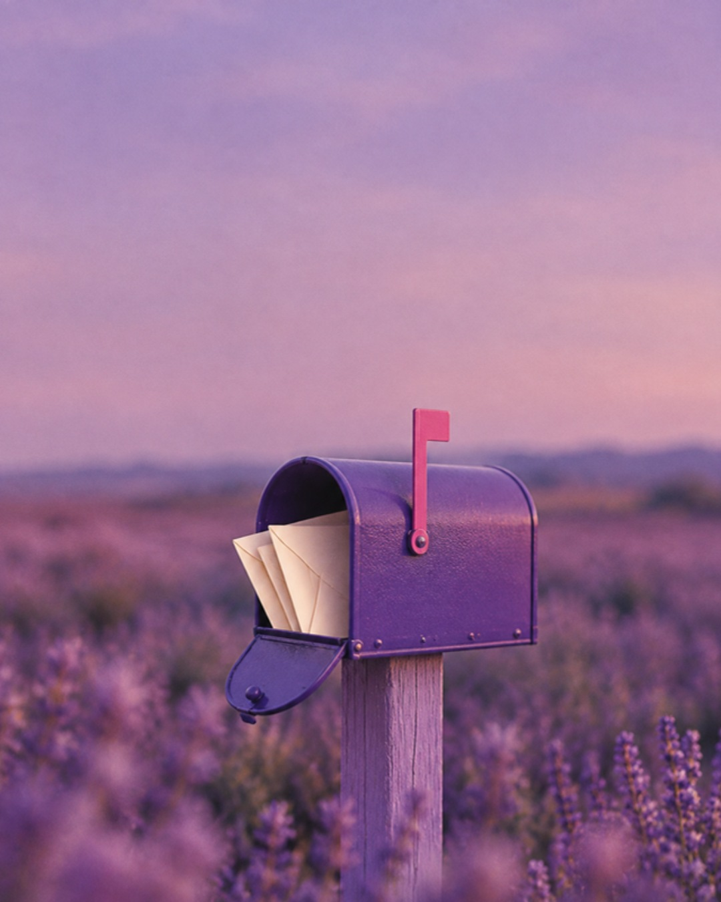
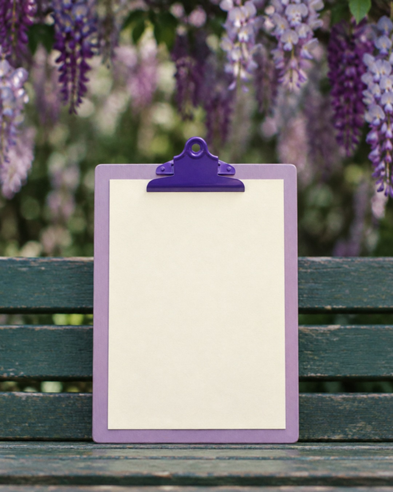
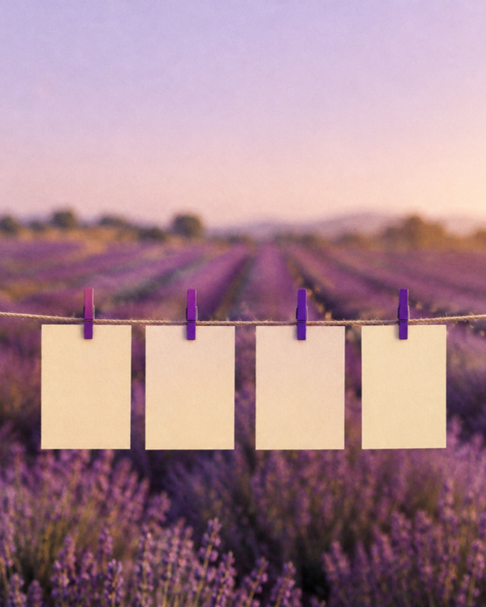
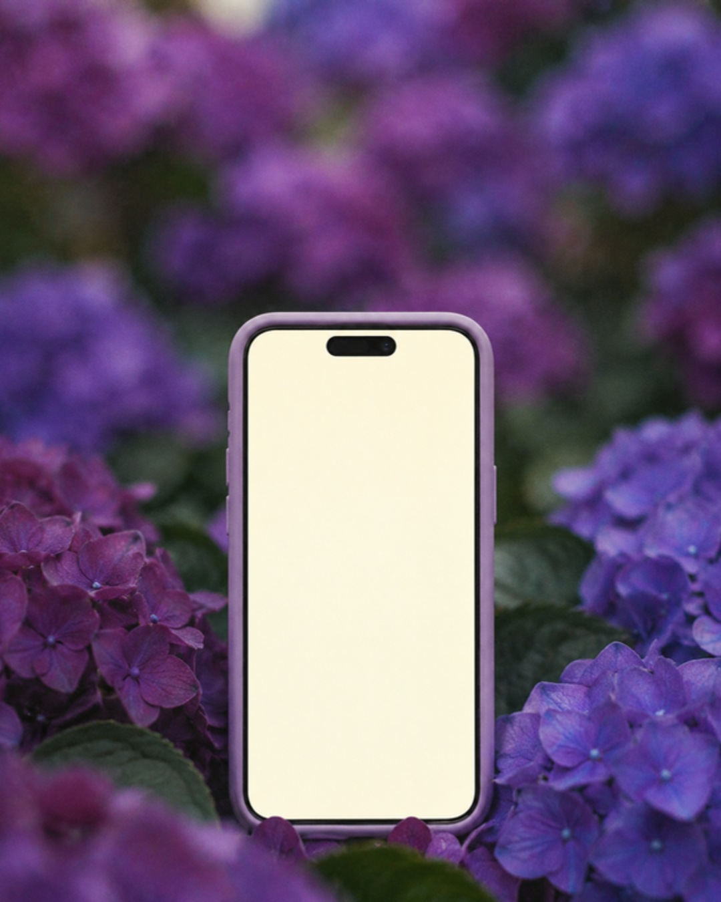
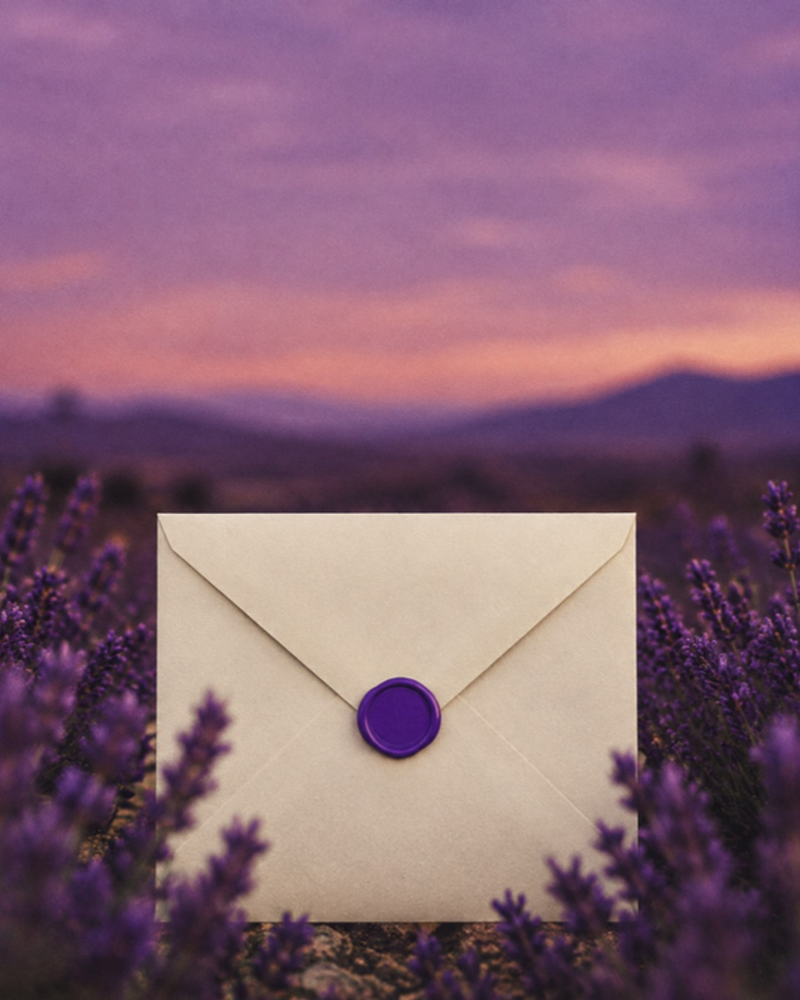

@itsemsdesignbastidor de cliente
virando cliente da ems:
o que chegaantes dologo?
tem coisa na caixa →
@itsemsdesign
@itsemsdesign01 de 04
chega primeiro: o contrato
combinadonão
saicaro.
contrato
ems × a sua marca
- prazocom data, não com “já já”
- valorfechado antes de começar
- ajustesquantas rodadas cabem
- entregaso que entra e o que fica de fora
assinado pelos dois lados
tudo por escrito antes do primeiro rabisco
@itsemsdesign02 de 04
depois: o briefing
perguntas queninguém tefez.
1. pra quem a sua
marca fala?
2. do que ela
quer distância?
3. onde ela quer estar
daqui a um ano?
você responde no seu tempo.
eu leio tudo, até o “não sei”.

@itsemsdesign03 de 04
aí: a direção criativa
o rumo antesdodesenho.
- cor
- letra
- matéria
- voz
você aprova o caminho, não só o resultado.
é aqui que o “ajustezinho” perde a força.

@itsemsdesign04 de 04
e o tempo todo: o andamento
sem sumiço,semsuspense.
sua marca
em que pé tá
- briefing
- direção
- desenhoagora
- ajustes
- entrega
próxima entregasexta
cada etapa com data
você não precisa perguntar

@itsemsdesignfecho
e só então
chega amarca.
qual dessas você nunca recebeu de um designer?
quer receber a sua? me chama na dm →pra: você
@itsemsdesign